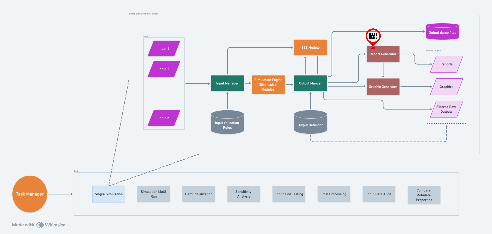

Report Generator#
Introduction#
The Report Generator is designed to create comprehensive and customizable reports from simulation data. Introduced in PR #976, it serves as a bridge between simulations and actionable insights. Post-simulation, the OutputManager utilizes the Report Generator to process and aggregate data, ultimately generating detailed CSV report files. This flexibility in data processing and aggregation makes the Report Generator an indispensable tool for users seeking to draw meaningful conclusions from their simulations.

A high-level flow of RG within RuFaS.#
Filter Files#
Overview#
After a simulation concludes, the OutputManager scans the output filters
directory. It identifies and utilizes JSON files starting with
report_ as report filter files. Like the Graph Generator, the Report
Generator can handle both single and multiple reports per filter file.
For multiple reports, the JSON file must contain a multiple key,
holding a list of JSON objects, each describing a separate report. Each
filter file then leads to the creation of one CSV report file.
Filter Content#
Each filter file contains several key components:
name: The name of the report, appearing as a column header in the CSV file. If missing, it defaults to
untitled_<timestamp>.filters: (Optional if cross validation is present) The list of Regex filters to select variables from the OutputManager’s variables pool.
variables: (Optional) When the data is stored in dictionaries (i.e., when reporting the variable to the output manager using
OutputManager.add_variable(), a dict was passed), thevariablesentry is used to select which variables from the dictionary are used in the report. Like thefilters, Regex patterns are used to select variables.filter_by_exclusion: (Optional) This determines whether the Regex patterns specified in
variablesare used to include or exclude variables from the filters. Can be set totrueorfalse, if not specified the default isfalse.constants: (Optional) These are values defined within the report that can be combined with variables in the aggregation step.
cross_references: (Optional if cross validation is present) References the values generated in other reports so that they can be used in vertical and horizontal aggregation operations.
vertical_aggregation: (Optional) Function used for aggregating data within each column.
horizontal_aggregation: (Optional) Function used for aggregating data within each row.
horizontal_first: (Optional) If present and
true, horizontal aggregation precedes vertical aggregation. The default behavior is vertical first (i.e.,false). Please note to use a boolean value (without the quotes""). If string values are used (i.e.,"true","false"), they will be converted to their boolean equivalents, but this will produce a warning as a reminder to use the boolean type instead.horizontal_order: (Optional) Specifies the order in horizontal aggregation. For instance, it differentiates
a/bfromb/a. Note that this does NOT support regex, the entries have to be exact match to what OutputManager sends to Report Generator. Consult with the variable names file.slice_start: (Optional) Index to start slicing data for the report.
slice_end: (Optional) Index to end slicing data.
graph_details: (Optional) Indicates that the user would like the report data to be sent to Graph Generator to be graphed. If used, must specify the type of graph requested (e.g. “plot”, “stackplot”, etc.) and give filters within the details.
graph_and_report: (Optional) Boolean flag to determine whether the user wants report data they’ve requested to be graphed to also be saved to a CSV file. If absent, it will default to
falseand report data requested to be graphed will not be saved to a CSV. If this flag is present without thegraph_detailsflag, it will log a warning to the user and will save the results to CSV.expand_data: (Optional) Boolean flag that will determine whether or not data expansion is attempted. Data expansion will compare two or more variables and add values so that all variables will have the same name of values. In order to do this, info maps will need to be recorded for every value of every variable and each info map must have the simulation day recorded in it. There are a number of other options that can be used to customize how data is expanded, they are described below.
fill_value: (Optional) Value that will be used to expand variable values. If not provided, this value will default to NumPy’s NaN.
use_fill_value_in_gaps: (Optional) If true, values added between original values will be the
fill_value. If false, then the last seen original value will be used.use_fill_value_at_end: (Optional) If true, values added after the last original value will be the
fill_value. If false, then the last seen original value will be used.display_units: (Optional) If true, units for the aggregated report data will appear at the end of the report title in the column header. Units for data being aggregated with
productordivisionare combined and simplified per usual rules of fractions. If using this feature in combination with cross-referencing in the report filter, it is necessary to take into account these units appearing in the report name. For example a previous report title may have beenMilk per cowbut if that report hasdisplay_unitsset totrue, any cross-reference looking for that report should account for the name with unitsMilk per cow_(kg/animal). The default setting isfalsewhich will facilitate report titles looking and working as they have prior to this feature being added.simplify_units: (Optional) If false, complex units resulting from aggregating data using
productordivisionwill not be simplified (e.g. a unit likekg*day/kgwill stay in that form and not be simplified today). The default setting istrue.data_significant_digits: (Optional) Specifies the number of significant digits to which the data is rounded. Important Note: when used alongside cross_references, rounding can lead to slight variations in aggregation results. This occurs because mixing rounded and non-rounded data in aggregation functions may produce results that differ slightly from those obtained using only non-rounded data.
Columns are the variables and rows are datapoints, i.e., each row
corresponds to a OM.add_variable call and each column corresponds to
what was passed in each call.
Aggregators#
The current list of aggregation functions, which can be expanded, is:
average#
Calculates the average of a list of numbers.
division#
Divides the first number in the list by each of the subsequent numbers.
For example, division_aggregator([100, 2, 5]) will perform 100 / 2 /
5, resulting in 10.
product#
Calculates the product of a list of numbers.
SD#
Calculates the standard deviation of a list of numbers.
sum#
Calculates the sum of a list of numbers.
subtraction#
Subtracts each subsequent number in the list from the first number. For
instance, subtraction_aggregator([10, 2, 3]) will compute 10 - 2 -
3, resulting in 5.
Example#
Using the provided example JSON file:
{
"multiple": [
{
"name": "Last Year's Average Daily Milk Production",
"filters": ["LifeCycleManager.daily_update.daily_milk_production"],
"vertical_aggregation": "average",
"slice_start": -365
},
{
"name": "Total Manure Nitrogen",
"filters": ["pen\\.calc_total_manure\\.pen_\\d+_daily_urine_nitrogen"],
"vertical_aggregation": "sum"
},
{
"name": "Last 6 Month's Heifer Population Growth",
"filters": [
"AnimalManager\\._record_animal_counts\\.num_heiferIs",
"AnimalManager\\._record_animal_counts\\.num_heiferIIs",
"AnimalManager\\._record_animal_counts\\.num_heiferIIIs"
],
"vertical_aggregation": "sum",
"horizontal_aggregation": "sum",
"horizontal_first": true,
"slice_start": -180
},
{
"name": "Last Year's Average Dry Cow Number",
"filters": ["AnimalManager\\.daily_updates\\.num_dry_cows"],
"vertical_aggregation": "average",
"slice_start": -365
},
{
"name": "First Month's Methane Emission from Pen 0",
"filters": ["pen\\.calc_total_manure\\.pen_0_daily_enteric_methane_g"],
"vertical_aggregation": "sum",
"slice_end": 30
},
{
"name": "Last Month's Methane Emission from Pen 0",
"filters": ["pen\\.calc_total_manure\\.pen_0_daily_enteric_methane_g"],
"vertical_aggregation": "sum",
"slice_start": -30
},
{
"name": "90 to 30 days ago Methane Emission from Pen 0",
"filters": ["pen\\.calc_total_manure\\.pen_0_daily_enteric_methane_g"],
"vertical_aggregation": "sum",
"slice_start": -90,
"slice_end": -30
},
{
"name": "Last year's average % in Parity 1",
"filters": [
"LifeCycleManager.daily_update.num_cow_for_parity_1",
"AnimalManager.daily_updates.num_cows_total"
],
"horizontal_order": [
"LifeCycleManager.daily_update.num_cow_for_parity_1",
"AnimalManager.daily_updates.num_cows_total"
],
"vertical_aggregation": "average",
"horizontal_aggregation": "division",
"horizontal_first": true,
"slice_start": -365
},
{
"name": "Last Year's Average Daily Milk Production (gallons)",
"filters": [
"LifeCycleManager.daily_update.daily_milk_production"
],
"constants": {
"Liters to Gallons": 0.264172
},
"horizontal_aggregation": "product",
"horizontal_first": true,
"vertical_aggregation": "average",
"slice_start": -365
},
{
"name": "Last Year's Average Daily Number of Milking Cows",
"filters": [
"LifeCycleManager.daily_update.milking_cow_num"
],
"vertical_aggregation": "average",
"slice_start": -365
},
{
"name": "Last Year's Average Daily Milk Production per Cow (gallons)",
"cross_references": [
"Last Year's Average Daily Milk Production (gallons)_hor_ver_agg",
"Last Year's Average Daily Number of Milking Cows_ver_agg"
],
"horizontal_aggregation": "division"
},
{
"name": "Crop Yields",
"filters": ["CropManagement._record_yield.harvest_yield\\..*"],
"variables": ["crop", ".*_yield", "planting_date", "harvest_date"]
},
{
"name": "Tillage Exclusion Report",
"filters": ["TillageApplication._record_tillage.tillage_record\\..*"],
"variables": [".*_fraction"],
"filter_by_exclusion": true
},
{
"name": "Last Year's Average Cow Body Weight (kg)",
"filters": [
"AnimalModuleReporter.report_life_cycle_manager_data.avg_cow_body_weight"
],
"slice_start": -365,
"graph_and_report": true,
"graph_details": {
"type": "plot",
"filters": [
"AnimalModuleReporter.report_life_cycle_manager_data.avg_cow_body_weight"
],
}
},
{
"name": "DMI by feed daily",
"filters": [
"AnimalModuleReporter.report_daily_ration.ration_daily_feed_totals_for_pen_3.*"
],
"variables": [
".*"
],
"slice_start": -365,
"graph_and_report": false,
"graph_details": {
"type": "plot",
"filters": [
"AnimalModuleReporter.report_daily_ration.ration_daily_feed_totals_for_pen_3.*"
]
}
},
{
"name": "Lac Cow Population and DE totals, gaps filled with zero",
"filters": [
"AnimalModuleReporter.report_ration_interval_data.ration_nutrient_amount_pen_3_LAC_COW",
"AnimalModuleReporter.report_daily_pen_total.number_of_animals_in_pen_3_LAC_COW"
],
"variables": ["DE"],
"slice_start": -365,
"expand_data": true,
"use_fill_value_in_gaps": true,
"use_fill_value_at_end": true,
"graph_and_report": true,
"graph_details": {
"title": "Padded Population and feed totals, gaps filled with zero",
"filters": [
"AnimalModuleReporter.report_ration_interval_data.ration_nutrient_amount_pen_3_LAC_COW",
"AnimalModuleReporter.report_daily_pen_total.number_of_animals_in_pen_3_LAC_COW"
],
"type": "plot",
"mask_values": true
}
},
{
"name": "Milk per cow/d, kg",
"filters": [
"AnimalModuleReporter.report_life_cycle_manager_data.daily_milk_production",
"AnimalModuleReporter.report_daily_animal_population.num_lactating_cows"
],
"horizontal_aggregation": "division",
"horizontal_order": [
"AnimalModuleReporter.report_life_cycle_manager_data.daily_milk_production",
"AnimalModuleReporter.report_daily_animal_population.num_lactating_cows"
],
"display_units": true
},
{
"name": "Herd enteric CH4 per FPCM",
"cross_references": [
"total herd enteric methane, kg_ver_hor_agg_.*",
"Herd FPCM, kg_hor_agg_.*"
],
"horizontal_aggregation": "division",
"horizontal_order": [
"total herd enteric methane, kg_ver_hor_agg",
"Herd FPCM, kg_hor_agg"
],
"display_units": true,
"simplify_units": false
},
]
}
Explanation:
Last Year’s Average Daily Milk Production
Filters the estimated daily milk production from the life cycle update of cows.
Averages this data over the last year (
slice_start: -365 days).
Total Manure Nitrogen
Filters the daily urine nitrogen content from the total manure calculations across all pens.
Sums up this data without any specific time slice, implying an aggregation over the entire dataset.
Last 6 Month’s Heifer Population Growth
Filters the number of heifers across different stages (I, II, III).
Sums up these numbers and then aggregates them across all stages for the last 6 months (
slice_start: -180 days).The
horizontal_first: true indicates horizontal aggregation precedes vertical aggregation.
Last Year’s Average Dry Cow Number
Filters the number of dry cows reported in daily updates.
Averages this data over the last year (
slice_start: -365 days).
First Month’s Methane Emission from Pen 0
Filters the daily methane emissions from Pen 0’s manure.
Sums up this data for the first 30 days of the dataset (
slice_end: 30 days).
Last Month’s Methane Emission from Pen 0
Filters the daily methane emissions from Pen 0’s manure.
Sums up this data for the last month (
slice_start: -30 days).
90 to 30 days ago Methane Emission from Pen 0
Filters the daily methane emissions from Pen 0’s manure.
Sums up this data for the period between 90 to 30 days ago (
slice_start: -90,slice_end: -30).
Last year’s average % in Parity 1
Filters the number of parity 1 cows and number of cows from the life cycle update
Divides the number of parity 1 cows by the number of cows for each row (to give % of cows in parity 1 for each sim_day)
Averages the % of cows in parity 1 for the last year (slice_start: -365)
The
horizontal_first: true indicates horizontal aggregation precedes vertical aggregation.The ‘horizontal_order” indicates the order of values for the horizontal (division) operation
Last Year’s Average Daily Milk Production (gallons)
Filters out the daily amount of milk production, which is tracked by RuFaS in liters.
Declares the constant “Liters to Gallons”, which is the constant factor for converting liters to gallons.
For each row the product of the milk production and the conversion factor is taken, yielding the amount of milk produced that day in gallons.
After calculating the daily amount of milk production in gallons, the milk production values for the last year are taken and averaged (slice_start: -365).
The
horizontal_firstfield specifies that the conversion from liters to gallons should happen before taking the average.
Last Year’s Average Daily Number of Milking Cows
Filters the number of milking cows being simulated by RuFaS.
The average number of milking cows over the last year (slice_start: -365) is calculated and reported.
Last Year’s Average Daily Milk Production per Cow (gallons)
The
cross_referencessection tells the Report Generator to grab the values produced by the reports named “Last Year’s Average Daily Milk Production (gallons)” and “Last Year’s Average Daily Number of Milking Cows”.Notice that in order to properly grab the data from these two reports, the suffixes that Report Generator attaches to the name must be included. I.e.,
cross_referencesmust specify “Last Year’s Average Daily Milk Production (gallons)_hor_ver_agg” instead of “Last Year’s Average Daily Milk Production (gallons)”.
After the values are grabbed from the cross referenced reports, the average milk production in the last year is divided by the average number of milking cows in the last year, yielding the average daily milk production in gallons per milking cow in the last year.
Crop Yields
Filters out all the yield results from all the harvested crops.
For each harvest, the variables “crop”, “wet_yield”, “dry_yield”, “harvest_date”, and “planting_date” are included in the report.
Notice that the regex pattern “.*_yield” is used to select both “wet_yield” and “dry_yield” variables.
Tillage Exclusion Report
Filters out all the records of tillage events that occurred in the simulation.
With “filter_by_exclusion” set to
true, the Report Generator selects the variables from each tillage event record that do not match the pattern “.*fraction”.In this example, the variables in each tillage event record are “day”, “year”, “tillage_depth”, “incorporation_fraction”, and “mixing_fraction”. “incorporation_fraction” and “mixing_fraction” match a pattern in “variables”, so they are excluded, and the rest of the variables are included.
Last Year’s Average Cow Body Weight (kg)
Filters out the “avg_cow_body_weight” from the previous year of the simulation.
With “graph_details” present and the “type” set to plot, it will send the report data to Graph Generator to graph.
With “graph_and_report” present and set to
trueit will also save the report data to a CSV.
DMI by feed daily
Filters the ration daily feed totals for pen 3.
With “graph_details” present and the “type” set to plot, it will send the report data to Graph Generator to graph.
With “graph_and_report” present and set to
falseit will NOT save the report data to a CSV. Note: this would also be the case if “graph_details” was present and “graph_and_report” was not included.
Lac Cow Population and DE totals, gaps filled with zero
Filters out the number of lactating cows in pen 3 and the amounts of DE in the ration being fed to those lactating cows in the last 365 days of the simulation.
Because “expand_data” is set to true, RuFaS will attempt to expand the DE and lactating cow numbers so that there are the same number of values for both variables. With “use_fill_value_in_gaps” and “use_fill_value_at_end” both set to true, RuFaS will insert NumPy
nans into the DE and lactating cow variables until both variables have the same number of values.With “graph_and_report” set to true and “graph_details” being filled out, the data filtered and processed for this report will be graphed. Note that the “graph_details” includes the flag “mask_values”, which will mask all
nanvalues in the data that is graphed and results in a much better graph.
Milk produced per lac cow
Divides the daily milk production (in
kg/day) by the number of lactating cows (inanimals).Will combine the units in the same operation as the data is aggregated.
Will display the combined unit of
kg/day*animalsin the report title like this:Milk produced per lac cow_hor_ver_agg_(kg/day*animals)
Herd enteric CH4 per FPCM
Divides total herd enteric methane (measured in
kg/day) by the Herd FPCM (measured inkg/day).Because
simplify_unitsis set tofalse, it will not reduce the combined units which would otherwise cancel one another out and beunitless.Will display the combined, unsimplified unit of
kg``day``/``day``kgin the report title like this:Herd enteric CH4 per FPCM_hor_agg_(kg*day/day*kg)